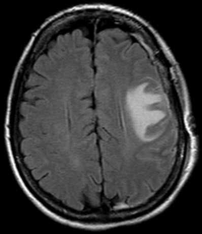

Image Thresholding v1.4 - WEBDICOM - Pace Giovanni e Andrea FarruggioSamples | |||||||||||||||||
Original imageHere you can see the original image, scroll down the page for apply Segmentation algorithm. |
Grayscale filterWe need to convert the image to gray for having a deeper precision for the segmentation. |
||||||||||||||||
|  | |||||||||||||||||
Segmentation samplesHere you can see the use of a thresholding function with pre-determined ranges. You can personalize every MIN-MAX thresholding range by acting on the code. Click on the button for COMPUTE the sample: |
|||||||||||||||||
|
|||||||||||||||||
THE GOAL: Dinamique Segmentation in a range of values: | |||||||||||||||||
|
|||||||||||||||||